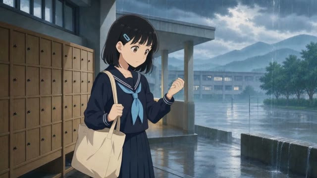

② 定妆图 → 分镜
一张图，
裂成九格分镜。
同一个角色、同一种画风，景别一格格推进。切开后，每一格都是一张独立的卡。
Gemini 3 Pro ImageGPT Image 2九宫格 3×3参考：定妆图
下一步 · 给第 1 格配音 ↓
文字 → 定妆图 → 分镜 → 配音 → 视频 → 成片，每一步接的都是最合适的那个模型。
① 文字 → 定妆图
写下角色和画风，出一张定妆图。后面的分镜和镜头，都拿它当参考。
② 定妆图 → 分镜
同一个角色、同一种画风，景别一格格推进。切开后，每一格都是一张独立的卡。
③ 配音
选音色、打台词。声音会作为参考交给视频模型，时长和口型跟着台词走。

镜 01 · 晴 · 温柔女声

④ 图片 → 视频
定帧加台词作参考，出一段 5 秒的镜头。
⑤ 成片
片尾字幕为占位，以新片实际用到的模型为准